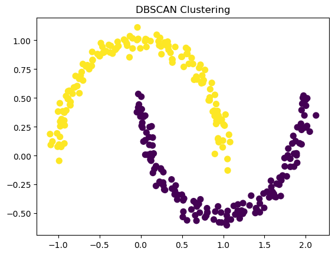
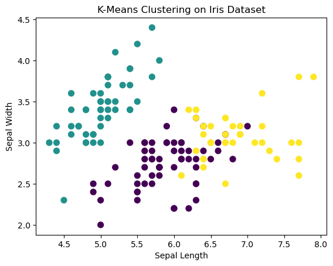

In this post, we delve into the fascinating world of clustering, a cornerstone of unsupervised learning in machine learning and data science. Clustering helps us find inherent patterns in unlabeled data, grouping similar items together. It has a myriad of applications, from customer segmentation in marketing to image segmentation in computer vision.
The Fundamentals
Definition and Purpose
Clustering involves grouping a set of objects such that objects in the same group are more similar to each other than to those in other groups. It’s a method to uncover the hidden structure within data.
Types of Clustering
There are several types of clustering methods:
Partitional Clustering: Divides the dataset into distinct groups. Hierarchical Clustering: Builds a hierarchy of clusters. Density-Based Clustering: Forms clusters based on the density of data points.
The Algorithms
K-Means Clustering
K-Means is a popular partitional clustering algorithm. It partitions data into ‘K’ distinct clusters based on their features.
DBSCAN (Density-Based Spatial Clustering of Applications with Noise) is effective in identifying clusters of arbitrary shapes and handling noise.
Python Example: DBSCAN
from sklearn.cluster import DBSCANfrom sklearn.datasets import make_moonsimport matplotlib.pyplot as plt# Generating synthetic data (two moons)X, _ = make_moons(n_samples=300, noise=0.05, random_state=0)# Applying DBSCANdbscan = DBSCAN(eps=0.3, min_samples=5)clusters = dbscan.fit_predict(X)# Plotting the clustersplt.scatter(X[:, 0], X[:, 1], c=clusters, cmap='viridis', s=50)plt.title("DBSCAN Clustering")plt.show()

Quality Matters
Silhouette Coefficient
The Silhouette Coefficient is a measure of how similar an object is to its own cluster compared to other clusters.
Python Example: Silhouette Coefficient
from sklearn.metrics import silhouette_score# Assume X and y_kmeans from the K-Means examplesilhouette_avg = silhouette_score(X, y_kmeans)print(f"Silhouette Coefficient: {silhouette_avg:.2f}")
Silhouette Coefficient: -0.04
We calculate the Silhouette Coefficient for the K-means clustering of our synthetic data. A higher coefficient suggests better-defined clusters.
Implementation
Iris Dataset Clustering
The Iris dataset is a classic dataset used in many clustering examples. Here, we apply K-Means to cluster iris flowers based on sepal length and width.
Python Example: Iris Dataset with K-Means
from sklearn.datasets import load_irisfrom sklearn.cluster import KMeansimport matplotlib.pyplot as plt# Loading the Iris datasetiris = load_iris()X = iris.data# Applying K-Meanskmeans = KMeans(n_clusters=3)kmeans.fit(X)y_kmeans = kmeans.predict(X)# Plotting the clustersplt.scatter(X[:, 0], X[:, 1], c=y_kmeans, s=50, cmap='viridis')plt.xlabel("Sepal Length")plt.ylabel("Sepal Width")plt.title("K-Means Clustering on Iris Dataset")plt.show()

This example shows K-Means clustering on the Iris dataset. The resulting plot helps visualize how the algorithm has grouped the flowers into clusters.
Conclusion
Clustering is a powerful tool in data analysis, helping us uncover hidden patterns and understand the intrinsic structure of data. While we covered some fundamental clustering techniques, the field is vast, with many more advanced methods and applications. As data continues to grow in size and complexity, the importance and capabilities of clustering algorithms are only set to increase.